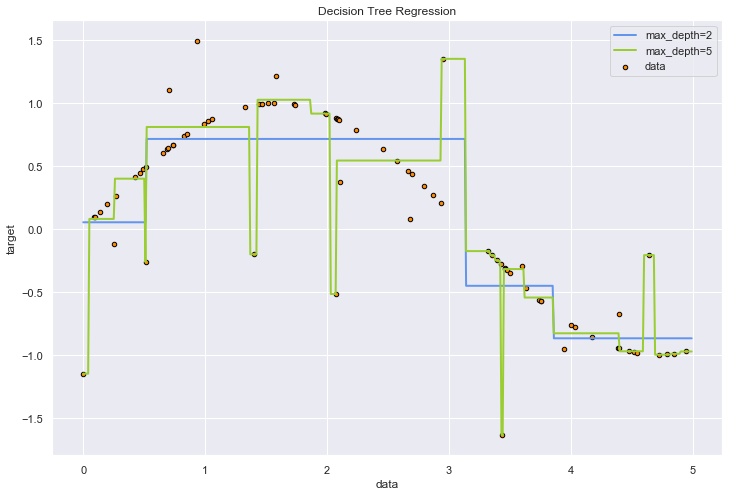

Decision Tree
Decision Tree
- Decision Tree Regression (Source)
A 1D regression with decision tree.
The :ref:decision trees <tree> is
used to fit a sine curve with addition noisy observation. As a result, it
learns local linear regressions approximating the sine curve.
We can see that if the maximum depth of the tree (controlled by the
max_depth parameter) is set too high, the decision trees learn too fine
details of the training data and learn from the noise, i.e. they overfit.
# Import the necessary modules and libraries
import numpy as np
from sklearn.tree import DecisionTreeRegressor
import matplotlib.pyplot as plt
# Create a random dataset
rng = np.random.RandomState(1)
X = np.sort(5 * rng.rand(80, 1), axis=0)
y = np.sin(X).ravel()
y[::5] += 3 * (0.5 - rng.rand(16))
# Fit regression model
regr_1 = DecisionTreeRegressor(max_depth=2)
regr_2 = DecisionTreeRegressor(max_depth=5)
regr_1.fit(X, y)
regr_2.fit(X, y)
# Predict
X_test = np.arange(0.0, 5.0, 0.01)[:, np.newaxis]
y_1 = regr_1.predict(X_test)
y_2 = regr_2.predict(X_test)
# Plot the results
plt.figure(figsize = [12,8])
plt.scatter(X, y, s=20, edgecolor="black",
c="darkorange", label="data")
plt.plot(X_test, y_1, color="cornflowerblue",
label="max_depth=2", linewidth=2)
plt.plot(X_test, y_2, color="yellowgreen", label="max_depth=5", linewidth=2)
plt.xlabel("data")
plt.ylabel("target")
plt.title("Decision Tree Regression")
plt.legend()
plt.show()
